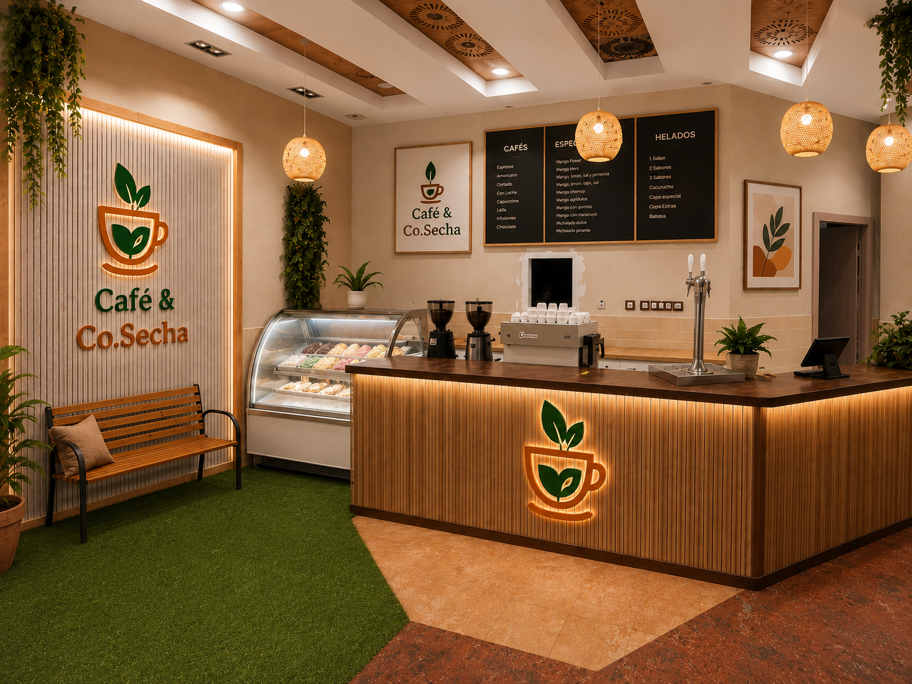

Cafetería en Centro Comercial El Teler · Ontinyent
Bienvenidos a Café & Co.Secha, un lugar donde cada detalle está pensado para que disfrutes sabores auténticos y experiencias que te hacen volver.

Nuestra historia
En Café & Co.Secha creamos un espacio acogedor en Ontinyent, donde el café, la fruta y los sabores colombianos se encuentran en una carta fresca, cercana y preparada con cariño.
Carrer del Pintor Segrelles, 1
Centro Comercial El Teler, piso 3
46870 · Ontinyent
Martes a domingo
08:30 — 13:00
17:00 — 24:00